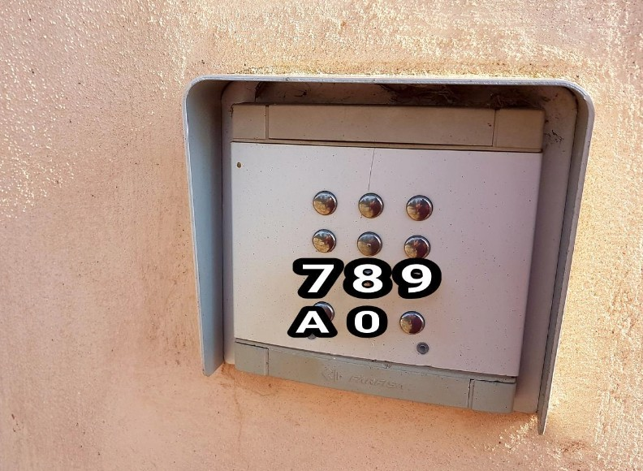
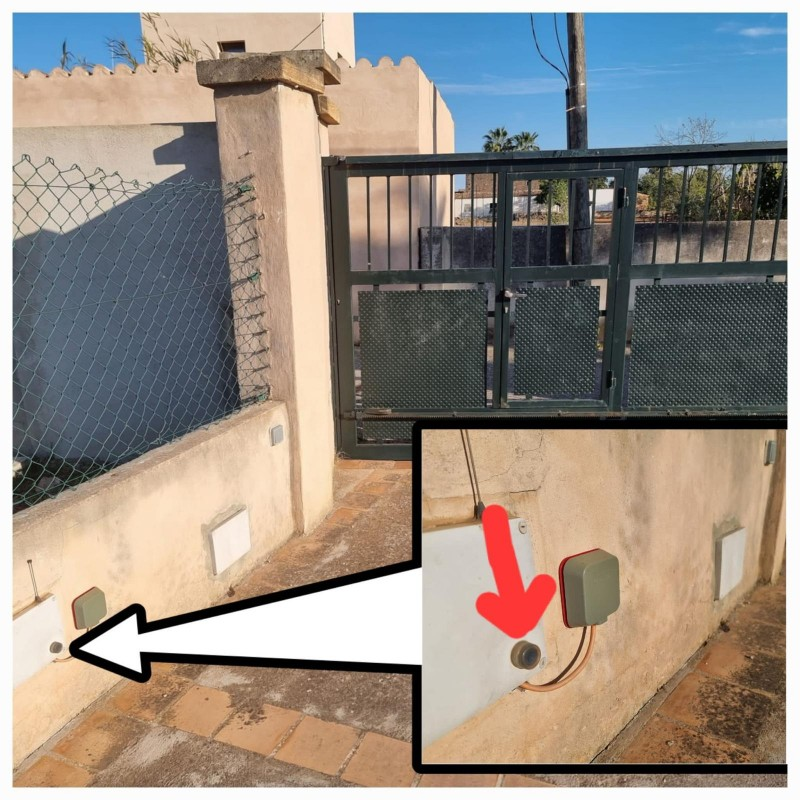
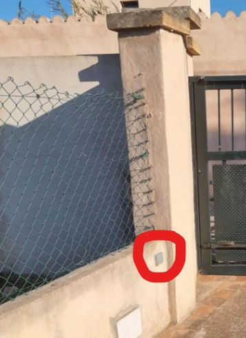
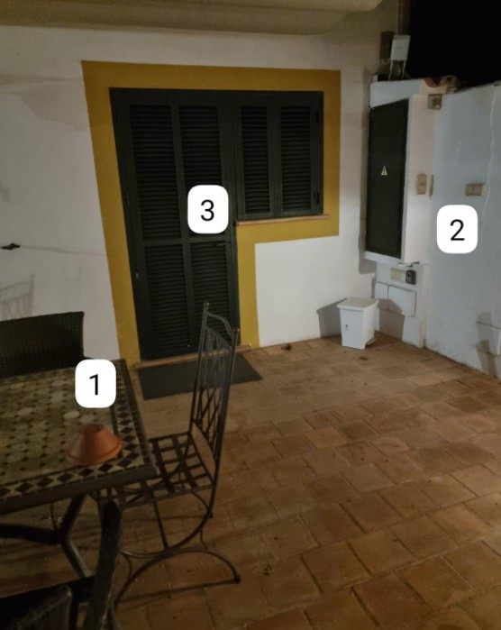

Anleitung zum Kontaktlosen Check-In
Standort & Anreise
Interaktive GPS-Routen und detaillierte Anfahrtsbeschreibungen finden Sie in unserer vollständigen Anreiseanleitung:
• Die Straße hat keinen offiziellen Namen, beginnt aber direkt an der Ecke Avenida del Cid 481.
• Die Finca befindet sich nahe dem Ende dieser Sackgasse auf der rechten Seite.
Öffnung des Haupt-Einfahrtstors
An der rechten Säule des Einfahrtstors befindet sich die Gegensprechanlage mit Tastatur. Geben Sie den zugewiesenen Code ein, um das Tor zu öffnen:

Sollten Probleme mit dem Code auftreten, rufen Sie uns unter +34 687 474 158 an, damit wir das Tor aus der Ferne öffnen können.
Innentaster für das Einfahrtstor
Sobald Sie sich im Parkbereich befinden, gibt es an der Innenwand einen Drucktaster, um das Tor von innen zu öffnen oder zu schließen.

Beleuchtung des Zugangswegs
In der Nähe des Tortasters finden Sie einen Lichtschalter, um den Weg zur Haustür zu beleuchten.

Hauseingang und Schlüsselübergabe
Auf der Veranda des Haupteingangs finden Sie die im Foto nummerierten Elemente:
- (1) Schlüsselort: Auf dem Außentisch neben der Veranda.
- (2) Außenschalter: Zum Ausschalten der Wegebeleuchtung nach dem Eintreten.
- (3) Haupteingangstür: Zugangstür zum Haus.
